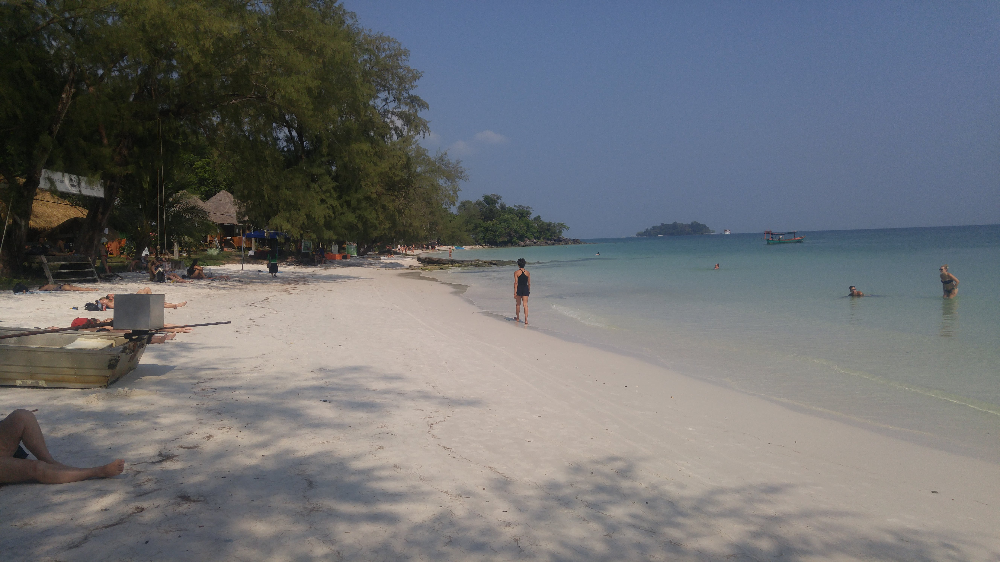

Go Back
Koh Rong

Koh Rong is a small island of the coast of Cambodia. It's accessible by ferry from Sihanoukville and offers a retreat from society to a beautiful, tropical, sometimes lawless feeling island. It's a great addition to any travellers itinerary in Cambodia. There are actually 2 Koh Rong island: the main one and Koh Rong Samloem. I'll write a bit about the main island which is the more crowded, larger island of the two. Koh Rong Samloem is very popular for travellers as well, particularly those that prefer the quiet peaceful beaches as opposed to larger parties. Here are some recommendations for things to do in Koh Rong.
In order to get to Koh Rong you'll have to get to Sihanoukville. For most people this means taking a bus or car from Phnom Penh but for travellers coming through Vietnam there are other ways to arrive at Sihanoukville such as through Kampot. Once you're at Sihanoukville just go to one of the boat ticket offices in the main tourist area. I believe the round trip tickets cost about 22 usd. They leave regularly throughout the day and many places offer open tickets meaning you can choose later when to come back. Once you've got your tickets you can wait at one of the many beachfront restaurants/ bars for your boat to arrive. The boat ride to Koh Rong is relatively short and soon you'll be on a small tropical island.
I was only on Koh Rong for 2 days so I didn't explore it too in depth but it's obviously a great beach destination. The tropical island offers white sands and warm turquoise water. The main commercial developments like restaurants, bars and stores were all built alongside the beach so basically all the life on this island starts and revolves around the beach. The pace of life is slow and you can stroll along the beach and see what is going on. I stayed on the main beach which I believe was called Kaoh Touch Beach. There are also several other beaches throughout the island which I didn't get a chance to explore including Long Beach and Sok San Beach.
As nighttime rolls in the entertainment and party on the island pick up. This starts on the beach and the beachfront restaurants/ bars. There will be fire shows and different specials throughout the island and you're sure to have a fun time. A short walk away from the main beach you'll find Police Beach nestled in the jungle. This is a large outdoor bar that has regular nighttime parties. They typically play electronic or trance music and offer a truly surreal party experience unique to this island. Aside from the activities I mentioned other popular tourist activities include zip lining through the jungle and taking boat trips.